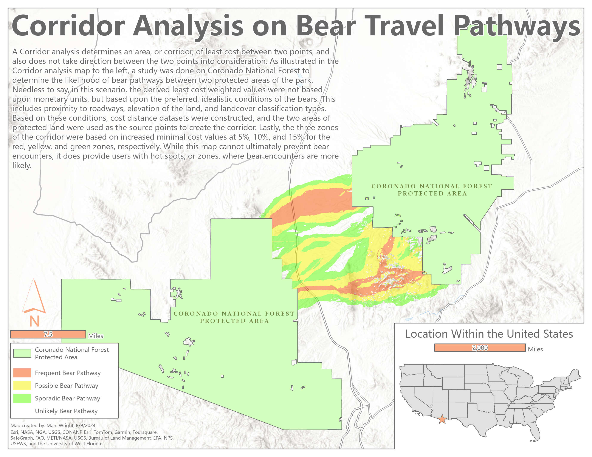

Bear Pathway Corridor Analysis

This project was built upon the fundamentals of reclassifying raster datasets to generate Suitability Maps, with the final deliverable being a Corridor Analysis that illustrates bear crossings between two national parks located in Arizona. A Corridor Analysis, similar to a Least Cost Path analysis, is a geoprocessing workflow that identifies the lowest cost zones connecting two locations within the dataset. Similar to Suitability Mapping, factors can be weighted to give priority to some criteria over others [distance to roads, elevation, and land cover in this scenario]. As shown in the map above, areas shaded red have the highest weighted score, indicating the highest probability of crossing paths with a bear.